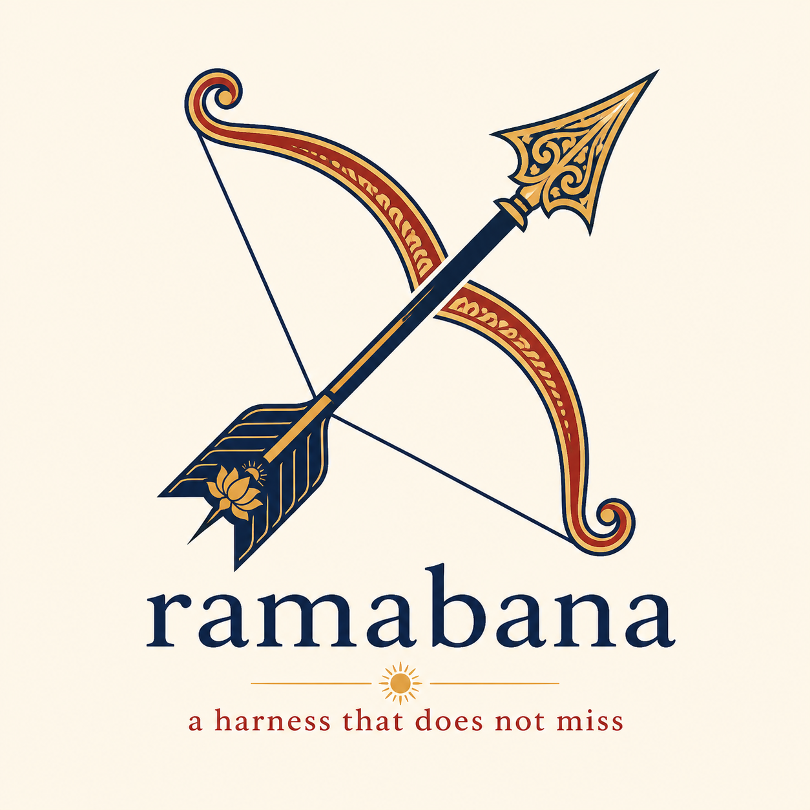
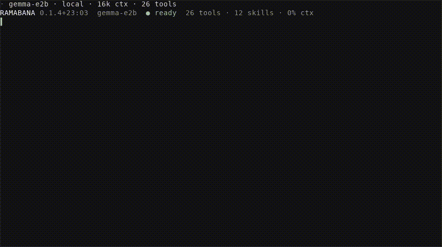

from ramabana.testing import fake_agent
agent, backend = fake_agent(replies=['The threshold is defined in `pkg/sizes.py`.'])
answer = agent.ask('Where is the threshold defined?')
answer'The threshold is defined in `pkg/sizes.py`.'

Ramabana runs a language model as a coding assistant. You describe a task in plain words. The model searches the code, reads and edits files, runs commands and Python, and tells you what it did. Ramabana runs that loop, decides which tools the model may call, keeps every write inside the folders you opened, and stops to ask you before anything changes.
The same agent runs in four places: a terminal session, an editor that speaks the Agent Client Protocol, an MCP server that lends its tools to another assistant, and your own Python program. Each of them builds the same Agent over the same tools, so a behaviour you see in one appears in the others.
Start with one folder. Ramabana writes only inside the folders that --root names, and its reads stay inside them too unless you pass --read-outside.

A few words recur on every page of these docs.
A turn is one prompt from you and everything the agent does to answer it. During a turn Ramabana calls the model, runs the tools the model asked for, sends back their results, and calls the model again. Each round of one model call and its tool calls is a step. The turn ends when the model answers without asking for a tool, or when it runs out of one of its budgets.
A tool is a Python function the model may call. Its name, arguments and docstring are what the model sees. Tools come in groups: code search, files, notebooks, the web, memory, shell commands, git, Python, and a few more. The toolset itself lives in shalya, and Ramabana imports it.
A host is the object that gives the tools their reach into the world: which folders they may read and write, whether the network is on, where memory is kept, and which approval gate guards a write. A host lists the groups it supports by inheriting one class per group, such as CodeHost or WebHost, and the agent offers only the tools of those groups. The terminal runs on shalya’s LocalHost. The tests run on an in-memory host from ramabana.testing.
The approval gate sits between the model and any tool with an effect, such as editing a file, running a command or making a git commit. In the default mode it asks you about each one. The Approvals section lists the other modes.
The briefing is the system prompt Ramabana writes for each session. It names the open folders, sets out how to work, lists the skills it found, and adds the project’s own instructions from files such as AGENTS.md and CLAUDE.md in each open folder.
A skill is a markdown file of guidance the agent reads only when the work calls for it. The briefing lists each skill in one line and the read_skill tool returns one in full.
A sub-agent is a second agent that the running one starts for a piece of the work, through the delegate tools. It has its own steps and transcript, works under the same approval gate, and reports back to the turn that started it.
A job is a kind of model call other than the turn itself, such as a completion, a summary or a sub-agent. Ramabana routes each job to a model suited to it, as Point it at a model explains.
Ramabana needs Python 3.12 or newer. The core package holds the agent, its hosts, and the file, code, shell and git tools, which is enough to build an agent into your own program. Each extra adds one way of using it:
| extra | adds |
|---|---|
[search] |
semantic code search, the vault’s memory and watches, the web tools |
[python] |
the Python prompt and --attach, on dhrishti |
[serve] |
ramabana-mcp and ramabana-acp |
[dhrona] |
--warm, which starts a chat with example rounds from dhrona |
[cli] |
the terminal session, plus [search] and [python] |
A program that embeds Ramabana installs only the extras it needs, such as ramabana[search,serve]. When an extra is missing, the tools that need it are left out of what the model is offered, and any command that needs it names the extra to install.
The core install already brings in the packages shalya depends on: dhrishti, jupyter-client, fossick, litesearch and vishalakshi, which in turn brings in mcp. The extras add the terminal, the two servers, the Python prompt and the search pieces on top.
To use the terminal on its own, run uv tool install 'ramabana[cli]' and then ramabana. The first interactive run starts inside a tmux server that belongs to Ramabana. tmux is the terminal multiplexer that splits one window into panes. Running inside it gives you the now pane, a live view of what the agent is doing in a split beside the session, and lets shift+enter queue a message, with no tmux setup on your part. When tmux is missing, it offers the install command once. ramabana --doctor checks tmux, extended keys, the config and ramabana-pane. --tmux off or RAMABANA_TMUX=off keeps the session in the terminal you started it in. Detaching or closing the window ends the session, and --resume latest reopens it.
| command | what it is |
|---|---|
ramabana |
the terminal session, drawn with teleprint. Needs [cli] |
ramabana-mcp |
the MCP server. Needs [serve] |
ramabana-acp |
the Agent Client Protocol server an editor launches. Needs [serve] |
ramabana --python |
the Python prompt, with the kernel inspected through dhrishti. Needs [python] |
ramabana-tick |
one beat of the schedules, run on a timer by pobblebonk |
--model names the model that this session’s turns run on, called the turn model. Without it the turn model is $RAMABANA_MODEL, then $LEELA_MODEL, then claude-opus-5-5 through Claude Code. A turn runs on this machine only when you name a local model.
| names | runs on | credential |
|---|---|---|
opus, sonnet, fable, haiku, claude-opus-5-5, claude-sonnet-5-5, claude-fable-5-1 |
Claude Code | a claude /login session |
gpt, gpt-mini, gpt-sol, gpt-5.6, gpt-4.1, gpt-4.1-mini |
the OpenAI API | OPENAI_API_KEY |
gpt-6-luna, gpt-5.5, gpt-5.3-codex-spark |
Codex | a Codex login |
anthropic/<id> |
the Anthropic API | ANTHROPIC_API_KEY |
copilot/<id> |
GitHub Copilot | a Copilot sign-in |
azure/<deployment> |
Azure OpenAI, v1 API | AZURE_OPENAI_ENDPOINT and AZURE_OPENAI_API_KEY |
openrouter/<vendor>/<model> |
OpenRouter | OPENROUTER_API_KEY |
gemma-e2b, gemma-e4b, gemma-12b |
LiteRT, on the device | none |
qwen-4b, mini-coder-4b, ornith-9b |
MLX, on Apple silicon | none |
llama-qwen-0.6b, llama-qwen-1.7b, llama-qwen-4b |
llama.cpp, on the device | none |
ollama/<id> |
the ollama daemon | none |
/models lists what this machine can reach and marks the one running. /model NAME changes model without ending the session. /model alone prints the routing summary.
Not every model call needs the turn model. Ramabana sorts the smaller calls into jobs and sends each job to a cheaper or faster model. Completions and classification run on claude-haiku-5-5. Inline edits, summaries and other one-shot work run on gpt-6-luna through your Codex login. Delegated sub-agents run on claude-sonnet-5-5. When the turn model is local, every job without a model of its own stays on it. When a job’s model cannot run, the job moves to another cloud route. Without a Codex login, the default Luna jobs fall back to the turn model. A cloud model whose one-shot answer fails or comes back empty is set aside for five minutes, and its jobs move the same way. With no cloud route left, a job runs on gemma-e4b on the device, and the turn never moves. The session reports each fallback once. With nothing left at all, the error names the job, the model and the key or CLI it needs.
$RAMABANA_MODEL_<JOB> overrides one job. <JOB> is ONESHOT, INLINE, COMPLETION, CLASSIFY, SUMMARY or SUBAGENT. The turn model uses $RAMABANA_MODEL and has no _TURN variable. /model JOB NAME sets one job inside a session:
~/.config/ramabana/config.toml holds the settings you would otherwise repeat in every shell: the model for each job, the window guard’s numbers, compaction, learning, and the defaults of the terminal’s flags. Every Ramabana on the machine reads it, including one inside Leela, an editor or an MCP client. A flag beats an env var, an env var beats the file, and the file beats the built-in default.
[jobs]
turn = "gpt-5.4" # what $RAMABANA_MODEL and --model beat
subagent = "gpt-5.6-luna"
[window]
margin = 1.2 # charge estimated token counts 20% more
[model."openai/gpt-5.4"] # correct a number fastllm's table has wrong
max_input_tokens = 272000
[model."claude-opus-5-5"] # a Claude Code turn silent this long is ended and tried once more
timeout = 300An entry Ramabana cannot use is reported and takes its default; nothing fails to start over it.
Ramabana chooses no provider for you. When the turn’s model cannot run here, because Claude Code is missing or a key is not set, the terminal prints the providers it can use, which are set up, and the model each job runs on, then offers ramabana setup:
It writes a [model."NAME"] table and [jobs] lines into config.toml. It never writes a key; export the env var it names. ramabana config show prints what is in effect.
| provider | needs | name a model as |
|---|---|---|
| OpenAI API | OPENAI_API_KEY |
gpt-5.4 |
| Azure OpenAI | AZURE_OPENAI_ENDPOINT, AZURE_OPENAI_API_KEY |
azure/<deployment>, or a [model."NAME"] table |
| AWS Bedrock | AWS_BEARER_TOKEN_BEDROCK, a Bedrock API key |
a [model."NAME"] table on the Mantle endpoint |
| Anthropic API | ANTHROPIC_API_KEY |
anthropic/<model> |
| Gemini API | GEMINI_API_KEY |
gemini/<model> |
| OpenRouter | OPENROUTER_API_KEY |
openrouter/<vendor>/<model> |
| Claude Code, Codex, Copilot | a sign-in | claude-opus-5-5, gpt-6-luna, copilot/<model> |
| any OpenAI-compatible server | its URL and an env var with its key | a [model."NAME"] table |
| this machine | a local runtime | gemma-e4b, qwen-4b, ollama/<model> |
Azure OpenAI, by hand:
[azure]
endpoint = "https://NAME.openai.azure.com" # or $AZURE_OPENAI_ENDPOINT; the key stays in $AZURE_OPENAI_API_KEY
[model."az-image"] # an Azure deployment of gpt-image-1, for generate_image
model_id = "gpt-image-1"
base_url = "https://NAME.openai.azure.com/openai/v1"
[jobs]
turn = "azure/gpt-5.4" # a deployment, named by its deployment name
completion = "azure/gpt-5.4-mini"
classify = "azure/gpt-5.4-mini"
image = "az-image"
video = "gemini/veo-3.0-generate-001" # generate_video; or an Azure sora-2 [model."NAME"]
[model."azure/prod-chat"] # a deployment named for no known model needs its window
max_input_tokens = 200000Requests go to https://NAME.openai.azure.com/openai/v1/responses with the deployment name as the model; no api-version is needed. A deployment named for a model, such as gpt-5.4, gets that model’s window and briefing. Any other name runs with a 128k window until max_input_tokens corrects it, and its cost reads as $0, because prices are looked up by model name.
AWS Bedrock, by hand, through its OpenAI-compatible Mantle endpoint:
[model."bedrock-gpt"]
model_id = "openai.gpt-5.4" # Bedrock's model id
base_url = "https://bedrock-mantle.us-east-1.api.aws/v1"
api_key_env = "AWS_BEARER_TOKEN_BEDROCK" # a Bedrock API key; short-lived keys need renewing
api_name = "openai" # Responses; openai_chat for the models that offer only chat completions
[jobs]
turn = "bedrock-gpt"Claude on Bedrock, and anything else that needs Bedrock’s native Converse API, AWS profiles or SigV4 signing, is not supported yet: fastllm, which makes the requests, implements none of them. The Mantle endpoint has no images endpoint, so generate_image needs another [jobs] image.
A [model."NAME"] table with model_id defines a hosted model of any OpenAI-compatible kind under a name of your own: model_id, base_url, api_key_env (the env var, never the key), api_name (openai for Responses, openai_chat for chat completions; openai is the default on an Azure host), vendor_name, runtime and ctx. Saved model aliases live in ~/.config/ramabana/models.json (Leela keeps its own in ~/.config/leela/models.json). Every Ramabana process loads them, and config.toml’s definitions, on first use; a name defined in both places is config.toml’s. A scheduled job, such as Dhrona’s nightly batch, sees only the environment it was started with, so export the key there too.
A message too large for the window still goes out. A huge paste, a screenshot too many or a giant tool result is cut to its head and its end, the whole kept in a file under the session’s run folder, and the note in its place tells the model where the file is and to read it in pieces.
This opens the current folder, asks before every write, and runs on the default model. Type a task and press enter. /help prints the key card and /guide the longer tour. ctrl+c stops a running turn and ctrl+d quits.
Pass a prompt instead and Ramabana runs one turn, prints the answer on stdout, and exits:
The one-turn form prints each problem on stderr and exits 1 when the turn model was not up, so a script or a git hook can use it.
| option | default | what it does |
|---|---|---|
--root A,B |
. |
the folders it may read and write, comma separated |
--model NAME |
routing default | the model this session’s turns run on |
--approve MODE |
ask |
ask, edits, auto, off or none. edits lets file and notebook edits through and asks for the rest |
--no-web |
web on | takes the network away from the web tools |
--read-outside |
off | reads may name any path. Writes stay inside --root |
--no-subagent-writes |
writes on | restrict delegated sub-agents to read-only tools |
--vault |
off | keeps what the agent reads in a vishalakshi vault |
--pii MODE |
off |
redact or refuse for what the vault hands back |
--pii-ner |
off | --pii gates titled names too, not only patterns |
--spec |
off | adds api_load, api_ops and api_call |
--theme NAME |
auto |
the terminal palette |
--max-tool-calls N |
auto |
20 to 400 tool calls per turn |
--max-steps N |
auto |
8 to 80 steps per turn, each a model call and its tools |
--cfg DIR |
~/.config/ramabana |
skills, extensions, history and plans |
--resume ID |
none | reopen a saved session by id, by prefix, or latest |
--python |
off | start in Python mode, on a kernel of your own |
--attach NAME |
none | join a live Python session |
--agent-proxy |
off | expose this session’s agent inside its Python prompt |
--kernels |
off | list live Python sessions and exit |
--json |
off | with a prompt: reply, usage, changes, activity, problems and session as JSON |
--no-bell |
bell on | no terminal bell when a turn ends or an approval waits |
--tmux MODE |
auto |
on or off: read the sibling panes and open the side pane. off, like RAMABANA_TMUX=off, also keeps the session out of ramabana’s own tmux |
--pane MODE |
auto |
on or off: the now pane at startup. auto opens it only inside tmux |
--doctor |
off | check tmux and the now pane, offer to install tmux, and exit |
--optin A,B |
none | extra tool groups: exhash (the hash-addressed edit_file), research, author, legacy |
--warm / --no-warm |
off | seed the chat with a few of dhrona’s example rounds (uv add "ramabana[dhrona]"), or start empty. Off by default: a model copies an example’s one call per message and its paths. --warm gives the small profile one round |
--profile P |
auto |
small offers fourteen tools and a one-screen briefing. full offers everything. auto picks small for a local model or a window of 32k or less. /model shows the active one. small leaves out extension tools not marked with ramabana.tools.small_tool |
--theme takes auto, github-dark, dark, light, gruvbox, gruvbox-light, nord, tokyonight, catppuccin, latte, everforest, dracula, kanagawa, solarized or solarized-light. auto is github-dark. Set your terminal to the scheme of the same name and the two agree. /theme NAME switches mid-session and repaints what is already on screen.
Type / and press tab to complete a command. The list holds this session’s commands, extensions included.
| command | what it does |
|---|---|
/help, /guide |
the key card, then the longer tour |
/model [JOB] [NAME], /models [all] |
the routing summary, a switch, or what this machine can reach |
/sessions, /resume [ID\|latest] |
the saved sessions, and reopening one |
/plan, /todo ID done\|active\|pending\|cancelled |
the checklist the agent works through |
/cost, /compact [NOTE] |
what the session has spent, and shortening the history |
/tool-budget [auto\|20..400], /steps [auto\|8..80] |
the per-turn budgets, and what the last turn used |
/approve [off\|ask\|edits\|auto], /subagents [on\|off\|steps N\|timeout S\|nest N] |
who may write, whether delegates may, and their limits |
/commit [FOLDER] [MESSAGE], /pr [FOLDER] [TITLE] |
a commit or pull request drafted from the diff of the repository holding FOLDER (default the project), behind approval |
/rewind [TURN] [files\|chat\|both], /branches, /branch NAME |
undo a turn’s files or chat, and the conversation branches. Undo restores edits, undoes git writes, and removes created files still unchanged |
/watch [RUN\|monitors], /unwatch, /tell RUN TEXT |
a tmux pane on a run’s transcript, and a message to a running sub-agent |
/pane, /pane off |
the now pane in a tmux split, and closing it |
/NAME ARGS, #note TEXT |
run a skill, or <cfg>/commands/NAME.md as a turn with $ARGUMENTS, $1..$n and @path filled in. A repo’s .agents/commands/ counts once project_extensions is opted in. #note saves a line to the next session’s memory |
/root [add PATH], /theme [NAME], /mouse |
the open folders, the palette, and clicking blocks |
/attach PATH, /detach [N], /paste, /copy [turn] |
files and images in, text out |
/skills, /skill NAME, /tools, /extensions, /reload |
what this session loaded, and loading it again |
/python, /agent, /vars, /promote NAME |
the Python prompt and its namespace |
/kernels, /join NAME, /agent_proxy |
live Python sessions |
/stop [ID], /runs [all] |
the runs in flight |
/quit, /exit |
leave |
The keys:
| key | what it does |
|---|---|
enter |
send. Mid-turn it steers: the running turn gets the line after its current tool call. A line with an @path, or sent with an attachment, waits for the next turn. tab completes a /command or an @path |
shift+enter |
mid-turn, queue the line as the next turn. It needs tmux extended keys, which ramabana’s own tmux has. Inside your tmux, ramabana turns them on for that server when they are off |
shift+tab |
cycle approvals through ask, edits and auto. The mode shows at the left of the row under the bar |
ctrl+t |
show or hide the plan |
ctrl+p, ctrl+n |
walk the prompts you have sent |
up, down, ctrl+r |
browse the transcript. pgup, pgdn, /? to search, y to copy a block, esc to leave |
ctrl+o |
fold or open all the working of a turn |
alt+1 to alt+9 |
open one entry of it |
ctrl+g |
make approvals one step stricter |
ctrl+v |
attach an image from the clipboard |
ctrl+c |
stop the turn and drop queued lines and any steering the turn has not taken yet. A second press terminates it, a third quits |
ctrl+d |
quit |
A turn reads top to bottom: ┆ narration, │ a tool call, then the answer. To send a file or an image with the prompt, drop its path on the terminal, write @path in the prompt, or use /attach PATH. tab after @ completes files and folders in the open folders, and from ~/, / or ../ when reading outside them is on. A folder attaches its listing. Quote a path with spaces: @"my notes/plan.md".
An approval gate guards the write tools. --approve sets its mode.
| mode | what happens |
|---|---|
ask |
every write waits for you. The default |
edits |
file and notebook edits run; other writes wait |
auto |
writes run unattended for the rest of the process |
off |
the gate refuses every write |
none |
no gate at all |
At an approval prompt:
y approves.n refuses.a approves everything for the rest of the session.ctrl+y approves with a note.shift+tab cycles ask, edits, auto and back to ask. From off it comes back in at ask. ctrl+g moves one step stricter, from auto to edits to ask to off, and never the other way. /approve MODE moves in either direction and answers any prompt already waiting.
The gate covers every tool with an effect:
replace_text, create_file, edit_cell, add_cell, and edit_file when --optin exhash offers itrun_python, run_shell, run_shell_bggit_commit, git_checkout, git_stash, git_remotememory_forget, create_skill, cancel_watch, add_root, cart_add, cart_removeGit goes through those tools. run_shell refuses git commit|push|pull|fetch|stash|switch|checkout and names the tool to use. Ramabana snapshots every git write so /rewind can undo it. When the same gated call comes three times running, Ramabana asks you rather than run or refuse it again, whatever the mode.
--root is the file policy. Name every folder, comma separated:
Writes reach those folders and nowhere else. Reads start out in the same folders. --read-outside widens reads to any path on the machine and leaves writes where they were. /root prints the open folders, and /root add PATH opens another mid-session for reading and writing.
A sub-agent is a second agent that the running one starts, through the delegate tools, to do one part of the work. Sub-agents may write, run commands and run Python by default. Every write remains behind this session’s approvals. --no-subagent-writes or /subagents off restricts them to read-only tools. A read-only session refuses delegate_async(writes=True).
A sub-agent takes at most 60 steps and runs for at most 1800 seconds by default. /subagents steps N and /subagents timeout S change those limits. timeout 0 removes the time limit. A delegation’s max_steps stays within the session cap and has a floor of 60 steps unless the session cap is lower. Two levels of sub-agents may delegate again by default. /subagents nest 0 disables nesting. A nested sub-agent gets only delegate_search. The sub-agents under one turn share one tool-call budget the size of the turn’s own. At most four run at once.
Every run keeps a transcript under <cfg>/runs/<session>/. Inside tmux:
/watch RUN opens a pane that tails the transcript./watch monitors tails the folder reviews./tell RUN TEXT sends a running sub-agent a message. It gets the message with its next tool result.read_terminal reads the sibling panes.run_shell_bg logs to a file rather than opening a pane. The side pane’s Background rows show its output, and p on one follows it in a tmux pane./pane opens the now pane in a split on the right. It shows the turn, the call it is on, and each sub-agent run with its own calls. The split needs tmux 3.1 or later, and --pane on opens it at startup. Without tmux, or with --tmux off, /pane prints the ramabana-pane command to run in another terminal instead.
A turn runs until the model stops calling tools. --max-tool-calls caps the tool calls. --max-steps caps the steps, each one model call and the tools it runs. Both take auto or a number: 20 to 400 calls, 8 to 80 steps. /tool-budget and /steps change them mid-session and print what the last turn ran under.
/cost prints:
/compact summarises the history so far and carries on with the shorter context. /compact NOTE tells the compactor what to keep.
Ramabana saves every session with a completed turn under --cfg, which defaults to ~/.config/ramabana. /sessions lists them with their turn counts and models. /resume ID reopens one from a full id or a unique prefix. From the shell:
A resumed session brings back its history and its plan. It prints on stderr any other folder that session had open, and /root add PATH opens it again.
--python starts a Jupyter kernel that belongs to you, with the agent in the layer above it:
Enter runs code that compiles, tab completes identifiers, and ctrl+c interrupts the cell. /agent hands the line back to the model and /python takes it again. The agent reads your namespace and writes only to its own overlay. /vars shows what is in the namespace, and /promote NAME moves one of the agent’s values into it.
Other terminals can share a live session. ramabana --kernels lists the ones running, --attach NAME joins one from another terminal, and /join NAME joins one from inside a session. --agent-proxy binds this session’s agent where the Python prompt can reach it, behind a proxy that restricts usage and callbacks.
--vault keeps what the agent reads in a vishalakshi vault, for the next session to retrieve. --pii redact masks personal data on the way back out of the vault. --pii refuse refuses the retrieval instead. --pii-ner extends either mode to titled names, not only patterns. Either mode needs --vault. Without it the command exits 2 rather than ignore the flag. A --python, --attach or --agent-proxy session has no vault-backed host, so it refuses --vault.
--spec adds api_load, api_ops and api_call. Point api_load at an OpenAPI, Azure or Google Discovery document and the agent can call the operations it describes.
Some work should happen on a timer even when no session is open. A schedule is a callback that pobblebonk fires at set times. A package registers one under the ramabana.ticks entry point, as dhrona does, and Python code registers one with ramabana.monitor.on_tick(name). A beat is one pass that runs every schedule that has come due. ramabana-tick runs one beat and leaves what the schedules found as notes, which the next session reads. --install hands the command to cron, launchd or schtasks, so beats keep firing while no session is open:
A skill is markdown the agent reads when the work calls for it. Ramabana looks for skills in these folders, in order:
<cfg>/learned/skills<cfg>/skills~/.agents/skills.leela/skills and .agents/skills under each open folderWhen two skills share a name, the later folder wins. In each folder, a skill is a subfolder holding a SKILL.md. Five skills ship inside the package as Python modules: coding_patterns, debugging, theory, write_prose and write_docs. Any folder above overrides them. /skills lists what this session found, and /skill NAME prints one.
<cfg>/learned holds what dhrona, a separate package that learns from past sessions, kept from earlier ones. Its skills override the packaged ones and lose to every folder you write. Its AGENTS.md goes in the briefing after Ramabana’s own rules and before the project instructions, and the project instructions outrank it. A learned skill is listed like any other and read when a task needs it; one that replaces an inlined skill is clipped in the briefing to the same cap as AGENTS.md. Nothing Dhrona proposes reaches a session until you accept it: each proposal waits on a pending/ branch of the folder’s own git repository. /learned in a session, or ramabana-learned from a shell, lists them, and diff ID, accept ID and reject ID act on one. An accept that would take AGENTS.md past the 2,000 characters Dhrona allows is refused. /learned compact ID then asks Dhrona to merge and shorten the paragraphs it wrote with that proposal folded in, keeping yours as they are, and the shorter file waits for review like any proposal. Accepting a proposal moves the others onto it, and one that no longer applies is marked stale; ramabana.learned offers the same to a host. --no-learned starts a session without the folder. /learned off, or ramabana-learned off, turns learning off for every session on this machine, as learning = false in config.toml: nothing learned is briefed, no lessons are kept or read, and the nightly batch does nothing until /learned on.
An extension adds behaviour without changing Ramabana. It is a Python file in <cfg>/extensions with a setup(reg) function, and through reg it can:
The hook events are before_turn(agent, prompt), after_turn(agent, text), before_tool(agent, name, args), after_tool(agent, name, out), compact(agent, text) and approval. reg.approval(fn) replaces the approval policy, and the last registration wins. /extensions prints one line per extension: loaded, or why not. /reload loads skills, extensions and tools again after an edit.
ramabana-mcp serves one host’s tools over MCP:
By default the server mounts only the read tools, because the client cannot reach this process’s approval gate. --write mounts the write tools too. --model NAME adds one further tool, ask, which runs a whole Ramabana turn and returns only its answer. --model also builds the agent. The mounted tools are then the same objects a turn gets, and they record into the same activity log. The server offers skills as resources rather than tools: an index, plus one per skill. A client lists them and fetches the one it needs.
| option | default | what it does |
|---|---|---|
--root A,B |
. |
the folders to serve |
--model NAME |
none | adds the ask tool, running on this model |
--write |
off | mount the write tools too |
--no-web |
web on | takes the network away from the web tools |
--read-outside |
off | reads may name any path. Writes stay inside |
--vault, --pii MODE, --pii-ner |
off | as in the terminal |
--transport NAME |
stdio |
stdio, sse or streamable-http |
--cfg DIR |
none | skills and extensions, with --model |
A model-less server still finds skills in the served folders and in ~/.agents/skills. The server loads --cfg and its extensions only when --model builds the agent.
A client that launches its own servers takes the command:
ramabana-acp speaks the Agent Client Protocol. An editor launches it and drives it against the editor’s own files and terminal.
Zed takes agents from agent_servers in settings.json:
The editor names the folder. --root here is the fallback for a client that names none. Approvals arrive as the editor’s own permission prompt. --model, --no-web, --vault, --pii, --pii-ner and --cfg work as they do in the terminal.
ramabana.agent.mk_agent builds what the terminal runs: a host over the folders you name, and an Agent whose approval gate works the way approve says. agent.ask(prompt) runs one turn and returns the answer.
The example below goes through the same Agent.ask path with fake_agent from ramabana.testing. Instead of a real model it uses a backend that returns the replies you give it, and instead of your disk it uses a small in-memory project, so it needs no credentials or downloads and writes nothing.
A long-running program, such as a web app that runs agent jobs, uses the same calls with these options:
mk_agent(read_roots=[...]) opens folders that the read tools search and no write touches. The system prompt names them.Approvals holds every waiting ask. answer(id, ok) resolves any of them, and waiting lists them oldest first. Each ask appears through on_activity as an awaiting row with its ask_id before its call runs.Approvals(policy=fn) is consulted before rules and modes. fn(name, args) returns 'allow', 'deny', 'ask' or None.no_listener='wait' holds an ask until a page listens, and that page is shown the asks already waiting. on_timeout='allow' lets an unanswered ask through, except one that the policy or the loop guard put to a person.agent.ask(prompt, schema=Model) returns a TurnResult whose result is a validated Model.Agent(session_id=...) names the session. A turn in a session another live process holds raises SessionBusy.max_cost, max_tokens, session_max_cost and session_max_tokens stop a turn that passes them. The turn is recorded with state budget.agent.events_to(path) writes one JSON line per call, ask, plan change, turn start and end, and steering delivered. A file past max_bytes rolls over to <name>.1.agent.queue(prompt) holds a prompt, and agent.run_queued() runs what is held, in order. Steering a turn never read joins the next turn.resume_session(id, full=True) restores the conversation as its last turn left it, every tool result whole. A stop that leaves a backend running hands its conversation to the next one.mk_agent(python='off') withholds Python, or a Dhrishti URL runs it in that kernel. mk_agent(global_skills=False) leaves ~/.agents/skills out. rules_path= names the job’s own rules file. Agent(extra_sp=...) adds to the briefing.host.add_worktree(repo, branch) makes a git worktree for the job and opens it as a root.ramabana.control.Control(agent).start() listens on a socket in the session’s run folder, and control_call(path, method, ...) prompts, steers, cancels and answers it from another process.examples/embed_host.py runs one such job end to end.
'The threshold is defined in `pkg/sizes.py`.'Start with the page for the contract you need:
The toolset itself is shalya, the git plumbing is gheasy, and the scheduler is pobblebonk.
The notebooks are the source. nbdev generates every module under ramabana/, and this page too.
Edit nbs/*.ipynb, never the exported .py.